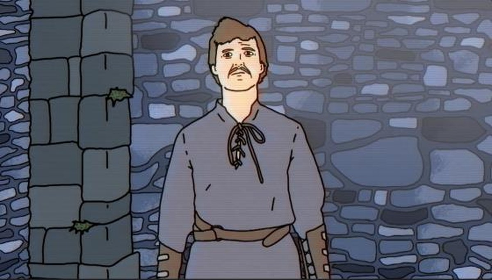
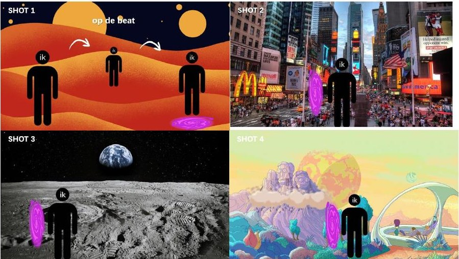

Videoclip — Dracula
Een videoclip met als thema Dracula, op een nummer van Gorillaz, waarin ik mezelf met rotoscope-animatie verander in een getekende versie van mezelf. Als Dracula reis ik van een oud huis naar New York, de maan en een vreemde wereld — alles op de beat.
Het idee
Ik film mezelf voor een greenscreen en maak daarna een paar getekende keyframes. Met EbSynth laat ik die tekenstijl automatisch over mijn bewegingen heen lopen, zodat het lijkt alsof ik een getekende versie van mezelf ben.
De achtergrond vervang ik in After Effects. Met 3D-lagen en camerabewegingen krijgt de achtergrond diepte en beweegt hij echt mee. Op de beat van de muziek maak ik korte cuts, stijlwissels en kleine animatie-effecten — alles wat verandert (kleuren, lijnen of vormen) reageert precies op de beat.
Begin tot eind
De zon schijnt naar binnen in een oud, verlaten huis waar Dracula in zijn kist ligt te slapen. Hij wordt wakker, klimt uit zijn kist en loopt door zijn oude huis. Hij opent de voordeur, gaat naar buiten en ziet monsters uit de grond kruipen. Als hij in het gat kijkt, ziet hij een trap die naar New York City leidt. Vervolgens loopt Dracula door Times Square, tussen alle logo’s en merken.
Shotlist
Vier shots, telkens met een portal die de scène-wissel op de beat markeert: van een woestijn naar Times Square, de maan en een vreemde wereld.

Apparatuur
Canon EOS Mark II · studiolamp · blauw of groen scherm.
Moodboard
Voor de sfeer heb ik een moodboard gemaakt met referenties uit o.a. animaties, Times Square en ruimtebeelden. Het volledige moodboard staat in de Canva-link hieronder en in de originele PDF.